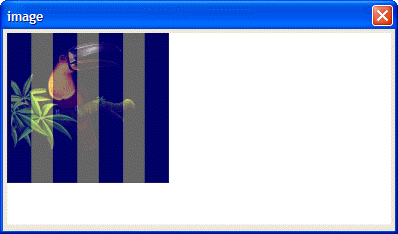

BITMAP_TRANSLUCENT()
Syntax
BITMAP_TRANSLUCENT( Bitmap_Name as C, Xpos as N, Ypos as N, Opacity as N [, Transparent_Color as C ] )
Argument | Description |
Bitmap_Name | The name of the bitmap to be modified. |
Xpos | The horizontal coordinate of the pixel to be modified. |
Ypos | The vertical coordinate of the pixel to be modified. |
Opacity | The amount of opacity to retain. 0 = Transparent. 100 = Opaque. |
Transparent_Color | Optional. The color to use to select pixels in the bitmap. Always considered to be totally transparent. |
Description
The BITMAP_TRANSLUCENT() function draws a translucent bitmap .
Limitations
Used only in the Code sections of UI_BITMAP_DRAW(), UI_SCREEN_DRAW(), and UI_PRINTER_DRAW().
Example
The following example places an image named stripes.bmp with 40% transparency over an image named toucan.bmp.

ui_bitmap_create("test",4,2) stripe_data = file.to_blob("c:\documents\Xbasic Reference\Images\stripes.bmp") ui_bitmap_load("stripes", stripe_data) bird_data = file.to_blob("c:\documents\Xbasic Reference\Images\toucan.bmp") ui_bitmap_load("bird", bird_data) ui_bitmap_draw("test", <<%code% inner_rect(0, 0, 4, 2) bitmap("bird", 0, 0) bitmap_translucent("stripes", 0, 0, 40) %code%) ui_dlg_box("image", <<%dlg% {image=test} %dlg%) |
See Also